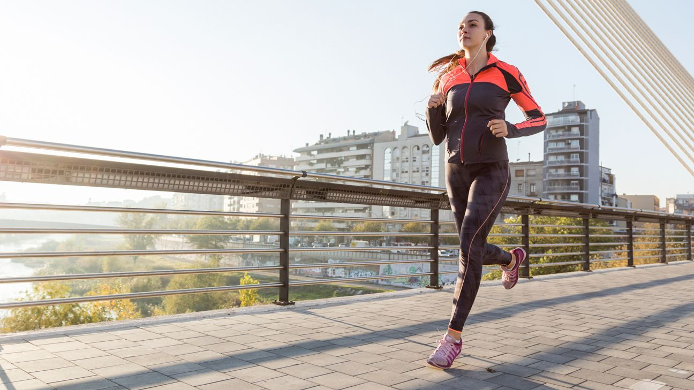
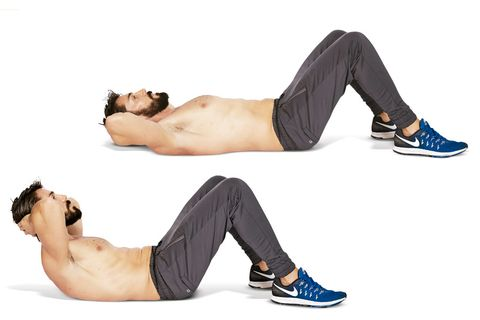
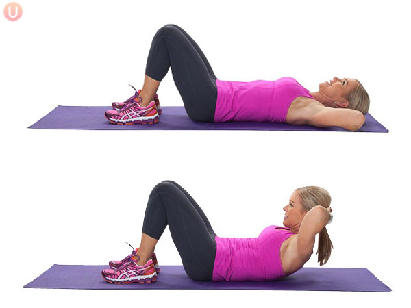
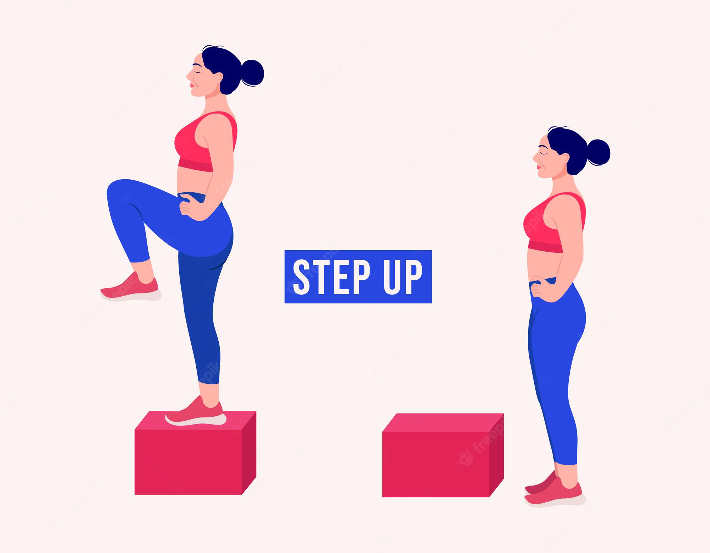
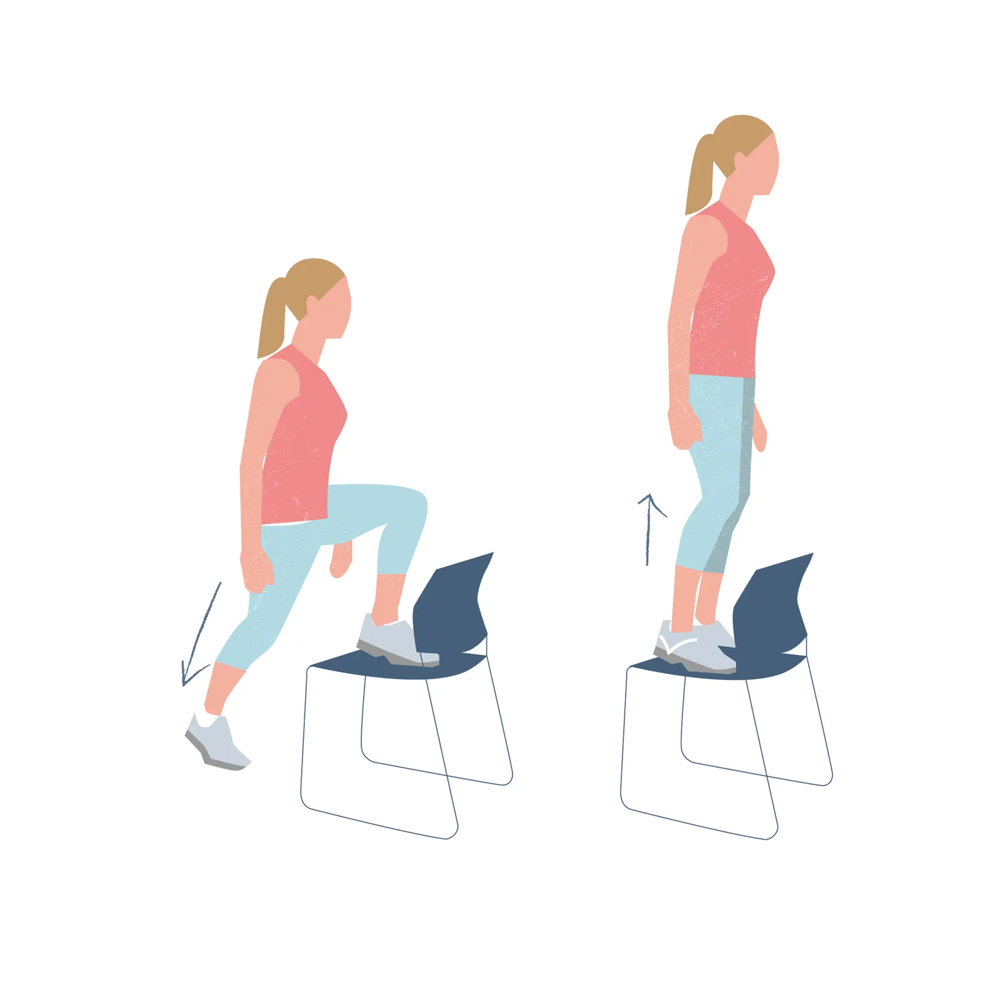

<style>
  @import url('https://fonts.googleapis.com/css2?family=Mitr&display=swap');
  @import url('https://fonts.googleapis.com/css2?family=Roboto+Flex:opsz@8..144&display=swap');
</style>

<ion-header>
  <ion-toolbar>
    <ion-title style="font-family: 'Mitr', sans-serif;font-size: 1.2em;text-align:center">
      <button [routerLink]="['/tabs/tab2']" ion-button icon-only
        style="border-radius: 50px;font-size: 27px; position: absolute; left: 10px;">
        <ion-icon name="chevron-back-sharp" size="small"></ion-icon>
      </button>
      Historial
    </ion-title>
  </ion-toolbar>
</ion-header>

<ion-content>
  
  <h3 style="font-weight: bold;font-family: 'Mitr', sans-serif; color: white; margin-left:0.5em">Rutina perdida de peso
  </h3>
  <hr style="margin-left:0.5em">
  <p style="font-family: 'Roboto Flex', sans-serif;margin-left:0.5em">Objetivo: Perder peso</p>
  <p style="font-family: 'Roboto Flex', sans-serif;margin-left:0.5em">Duración: 50 minutos</p>
  <p style="font-family: 'Roboto Flex', sans-serif;margin-left:0.5em">Equipamiento: <span
      style="color: rgb(0, 255, 8)">NO</span></p>
  <p style="font-family: 'Roboto Flex', sans-serif;margin-left:0.5em">Lugar: Casa</p>
  <hr style="margin-left:0.5em">

  <div>
    <h4 style="font-weight: bold;font-family: 'Mitr', sans-serif;color: white; margin-left:0.5em">Calentamiento</h4>
    <p style="font-weight: bold;font-family: 'Mitr', sans-serif;color: white; margin-left:0.5em">Estiramientos generales
    </p>
    <p style="font-family: 'Roboto Flex', sans-serif;margin-left:0.5em;margin-right:0.5em">Calentaremos de forma
      progresiva todos los
      músculos y articulaciones, ya que estamos al inicio del entrenamiento y estamos frios. Movimiento articular
      generalizado, realizando una respiración continua y controlada.</p>
  </div>

  <div>
    <h4 style="font-weight: bold;font-family: 'Mitr', sans-serif;color: white; margin-left:0.5em">1. Ejercicio</h4>
    <p style="font-weight: bold;font-family: 'Mitr', sans-serif;color: white; margin-left:0.5em; font-style: oblique;">
      Carrera continua</p>
    <p style="font-family: 'Roboto Flex', sans-serif;margin-left:0.5em;margin-right:0.5em">La carrera continua es una
      forma de entrenamiento que se realiza a una intensidad constante y que no implica períodos de descanso. Se puede
      realizar a una intensidad baja o moderada, dependiendo de lo que quieras lograr y de tus niveles de condición
      física actuales.</p>
    
    
    <p style="font-family: 'Roboto Flex', sans-serif;margin-left:0.5em"><span
        style="font-style: oblique; text-decoration: underline;">Descanso:</span>3 minutos despues de carrera</p>
  </div>

  <div>
    <h4 style="font-weight: bold;font-family: 'Mitr', sans-serif;color: white; margin-left:0.5em">2. Ejercicio</h4>
    <p style="font-weight: bold;font-family: 'Mitr', sans-serif;color: white; margin-left:0.5em; font-style: oblique;">
      Crunches
    </p>
    <p style="font-family: 'Roboto Flex', sans-serif;margin-left:0.5em;margin-right:0.5em">La sentadilla o cuclilla es
      uno de los ejercicios básicos del entrenamiento de fuerza. Trabaja directamente los músculos de muslo, músculos de
      la cadera y glúteos, y fortalece los huesos, ligamentos y tendones de piernas y caderas.</p>
    
    
    <p style="font-family: 'Roboto Flex', sans-serif;margin-left:0.5em"><span
        style="font-style: oblique; text-decoration: underline;">Series:</span> 5 series de 15/20 repeticiones</p>
    <p style="font-family: 'Roboto Flex', sans-serif;margin-left:0.5em"><span
        style="font-style: oblique; text-decoration: underline;">Descanso:</span> 50 segundos entre serie</p>
  </div>

  <div>
    <h4 style="font-weight: bold;font-family: 'Mitr', sans-serif;color: white; margin-left:0.5em">3. Ejercicio</h4>
    <p style="font-weight: bold;font-family: 'Mitr', sans-serif;color: white; margin-left:0.5em; font-style: oblique;">
      Step-up
    </p>
    <p style="font-family: 'Roboto Flex', sans-serif;margin-left:0.5em;margin-right:0.5em">Elevamos nuestra pierna
      derecha y la apoyamos en la parte superior del cajón, silla o banco y, manteniendo la espalda lo más erguida
      posible (y ahí es donde entra en juego la musculatura de nuestro core) empujamos nuestro pie derecho sobre el
      cajón para impulsarnos para subir.</p>
    
    
    <p style="font-family: 'Roboto Flex', sans-serif;margin-left:0.5em"><span
        style="font-style: oblique; text-decoration: underline;">Series:</span> 5 series de 4/6 repeticiones</p>
    <p style="font-family: 'Roboto Flex', sans-serif;margin-left:0.5em"><span
        style="font-style: oblique; text-decoration: underline;">Descanso:</span> 120 segundos entre serie</p>
  </div>

  <div>
    <h4 style="font-weight: bold;font-family: 'Mitr', sans-serif;color: white; margin-left:0.5em">4. Ejercicio</h4>
    <p style="font-weight: bold;font-family: 'Mitr', sans-serif;color: white; margin-left:0.5em; font-style: oblique;">
      Carrera más relajada
    </p>
    <p style="font-family: 'Roboto Flex', sans-serif;margin-left:0.5em;margin-right:0.5em">a carrera continua es una
      forma de entrenamiento que se realiza a una intensidad constante y que no implica períodos de descanso. Se puede
      realizar a una intensidad baja o moderada, dependiendo de lo que quieras lograr y de tus niveles de condición
      física actuales. Bajaremos la intensidad de la carrera para realizar una vuelta a la calma progresiva.</p>
    
    
  </div>

</ion-content>

<ion-tab-bar slot="bottom">
  <ion-tab-button tab="tab1" [routerLink]="['/tabs/tab1']">
    <ion-icon name="barbell"></ion-icon>
  </ion-tab-button>

  <ion-tab-button tab="tab2" [routerLink]="['/tabs/tab2']">
    <ion-icon style="color: white;" name="stats-chart"></ion-icon>
  </ion-tab-button>

  <ion-tab-button tab="tab3" [routerLink]="['/tabs/tab3']">
    <ion-icon name="book"></ion-icon>
  </ion-tab-button>

  <ion-tab-button tab="tab4" [routerLink]="['/tabs/tab4']">
    <ion-icon name="person"></ion-icon>
  </ion-tab-button>